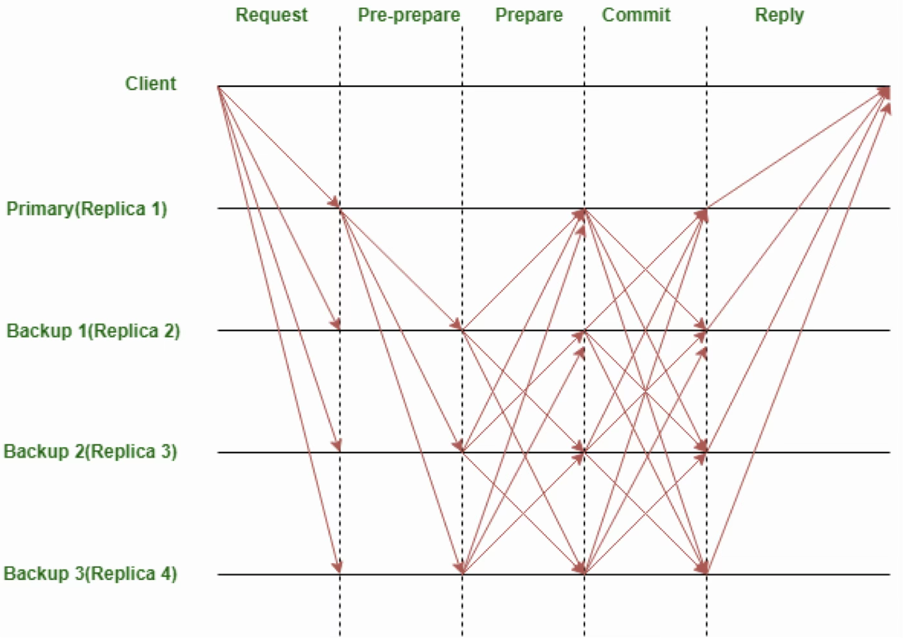
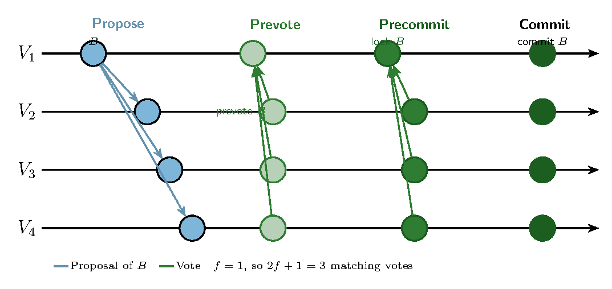
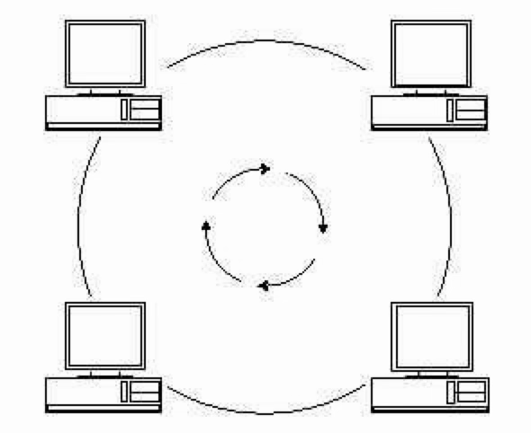
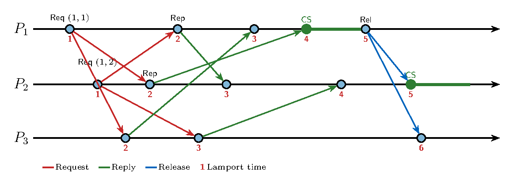
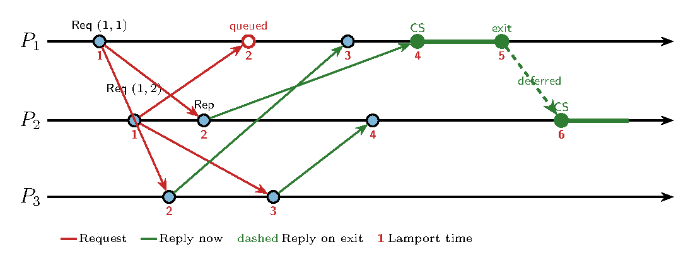

Sistemas Actuales de Computación
U5-Coordination/WithOutCoordination
├── README.md
├── server.py
└── client.pyTechniques to coordinate actions and agree on shared value in Distributed Systems:
Examples:
Distributed Mutual Exclusion:
In the asynchronous system model, it is impossible to guarantee agreement in finite time under all failure scenarios.
The consensus problem can be approached in practice: there exist protocols to solve consensus under vast majority of plausible failure scenarios.
That’s not the case for atomic commitment: if each participant has their own constraints, then you can’t tolerate any one participant’s failure.
In that sense, atomic commitment is even harder than consensus.
Three requirements for a solution:
But there are failures:
(a Case) requirements for a solution:
Several generals must agree on one plan: attack or retreat (Lamport et al. 1982). They only communicate by messenger. Some generals are traitors.
A traitor can send attack to one loyal general and retreat to another. The loyal ones still have to:
With oral messages, three generals cannot tolerate one traitor. Each loyal lieutenant hears a different order and cannot tell who lied. The bound is the one PBFT uses next: \(n \ge 3f + 1\) loyal and traitor generals to cope with \(f\) traitors.
A crash only goes silent. A Byzantine node can lie, and can lie differently to each peer.
Oral messages: delivery is reliable, the receiver knows the sender, and silence is detectable (Lamport et al. 1982). A traitor may still say anything.
For one traitor, four generals suffice. The commander sends an order. Each lieutenant then tells the others what he heard, and every loyal lieutenant decides by majority.
For \(f\) traitors that exchange is repeated \(f\) times. Reporting what you were told is a smaller Byzantine agreement, with one traitor fewer. Each level needs three voices for every traitor, so \(n \ge 3f + 1\) throughout.
Consensus when replicas may lie, not only crash (Castro and Liskov 1999). Paxos and Raft are no longer safe under that fault.
One client request, three rounds:
The client accepts the answer when \(f + 1\) replies match. If the primary is silent or contradicts itself, a view change elects another and keeps requests that were already prepared. Termination still needs partial synchrony: eventually, messages arrive before the timeout.

The same Byzantine quorum, used to agree on the next block of a chain (Buchman et al. 2018). Validators may have weighted votes, and the set of validators is known. A committed block is final: a longer chain does not replace it.
Each height proceeds in rounds, and each round has a proposer.
\(2f + 1\) precommits commit the block, and the height advances. Otherwise the round times out and the next proposer tries. The lock is the safety argument across rounds: after precommitting, a correct validator does not vote for a conflicting block.
Where PBFT keeps one primary to order client operations, Tendermint rotates the proposer, and the value agreed on is a block in a log.
Four validators, so \(f = 1\) and a quorum is \(2f + 1 = 3\). \(V_1\) proposes block \(B\). The arrows into \(V_1\) are the votes it counts; \(V_2\), \(V_3\) and \(V_4\) count the same broadcast.

\(n = 3f + 1\) validators. A decision needs \(2f + 1\) votes. nil is a vote for “no block”.
lockedValue := nil # block this validator must keep
round := 0
while the height is not committed:
proposer := proposer for this height and round
PROPOSE
if I am the proposer:
propose lockedValue, or a new valid block if not locked
else:
wait for the proposal, or for the timeout
PREVOTE
if the proposal is valid and does not conflict with lockedValue:
prevote the proposal
else:
prevote nil
wait for 2f + 1 prevotes, or for the timeout
PRECOMMIT
if 2f + 1 prevotes name the same block v:
lockedValue := v
precommit v
else:
precommit nil
wait for 2f + 1 precommits, or for the timeout
if 2f + 1 precommits name the same block v:
commit v and start the next height
lockedValue := nil
round := 0
else:
round := round + 1A correct validator that has precommitted \(v\) does not prevote a different block in a later round. That lock is why two rounds cannot commit two blocks at the same height.
Create an algorithm to allow a process to request and obtain exclusive access to a resource that is available on the network
Required properties:
Also desired:
Liveness and fairness hold only under the assumptions on the next slide. A holder that never releases the resource, or a process that stops answering, blocks the rest.
These are the hypotheses of the basic algorithms (Lamport, Ricart-Agrawala), not properties of a real network.
The performance is generally measured by the following four metrics:
\[ X_{System} = \frac{1}{Delay+CS_{Duration}} \]
Mimic single processor system
One process elected as coordinator (Leader election problem):
If another process claimed resource:
Benefits:
Problems:
Assume known group of processes

Safety:
Liveness:
Delay:
Problems:
A process can access a resource via distributed agreement
Distributed algorithm: logical clocks and a request queue at every process (Lamport 1978).
The queues are not identical at every instant: a request still in transit is missing at some processes. The entry rule is what makes that safe.
First step: request the resource
Second step: use the resource
\(P_i\) enters only when both conditions hold:
Third step: release the resource
\(P_1\) and \(P_2\) both request at Lamport time 1. The pairs decide: \((1,1) < (1,2)\), so \(P_1\) enters first. \(P_3\) only replies.

Safety: the pair \((T_i, i)\) is one total order at every process. \(P_i\) enters only after a later message from every peer, so any request that should come first is already in the queue, and \(P_i\) is at the head.
Liveness: if nobody fails and every holder releases, the earliest request eventually has its replies and reaches the head. That request enters.
Fairness: requests are served in timestamp order, not in the order the network delivered them.
Delay: each execution sends \((N-1)\) requests, \((N-1)\) replies and \((N-1)\) releases. Total: \(3(N-1)\) messages.
Problems:
Same clocks and the same pair \((T_i, i)\) as Lamport (Ricart and Agrawala 1981). The release multicast disappears: permission is a reply, and a reply can be postponed.
To enter the critical section, \(P_i\):
A peer does not always reply at once. It replies immediately only if it does not need the resource first.
Each process is in one state: RELEASED, WANTED, or HELD. The pair order is \((T, p) < (T', q)\) when \(T < T'\), or when the timestamps are equal and \(p < q\).
state := RELEASED
enter():
state := WANTED
T := Lamport time of this request
send Request(R, i, T) to every other process
wait for (N - 1) replies
state := HELD
on Request(Ti, pi) at pj, i ≠ j:
if state = HELD
or (state = WANTED and (T, pj) < (Ti, pi)):
queue pi # reply later
else:
reply to pi # at once
exit():
state := RELEASED
reply to every queued requestIf \(P_j\) is in the critical section, or it is waiting with an earlier pair, it withholds the reply. Otherwise it replies immediately, including when it is waiting with a later pair.
The same two requests, \((1,1) < (1,2)\). There is no release. The missing arrow is the point: \(P_1\) does not answer \(P_2\) when the request arrives.

Safety: two competing processes do not reply to each other. The later pair replies; the earlier pair defers its reply until it leaves. Both cannot be in the critical section. The pair \((T_i, i)\) is unique, so one of the two is earlier.
Liveness: the pending request with the smallest pair receives a reply from every peer. A process that is only waiting, and has a larger pair, replies at once. It does not defer. If nobody fails and every holder leaves, that smallest request collects \((N-1)\) replies.
Fairness: among overlapping requests, the smaller pair enters first.
Delay: \((N-1)\) requests and \((N-1)\) replies, so \(2(N-1)\) messages per entry. There is no release multicast. On exit the process sends the replies it had postponed, from \(0\) to \((N-1)\). Those messages are the replies the waiting processes already count in their own \(2(N-1)\).
Problems:
Both use the pair \((T_i, i)\). They differ in who replies, and in what a process needs before it enters.
| Lamport | Ricart & Agrawala | |
|---|---|---|
| Reply | Always, at once. No hold-back | At once, unless the receiver is in the critical section or waiting with an earlier pair |
| Enter when | Own request is the earliest in the queue, and a later reply has arrived from every peer | \((N-1)\) replies have arrived |
| Release | Multicast Release to the group; each peer deletes that request |
No release multicast. Reply only to the queued requests |
| Messages per entry | \(3(N-1)\): request, reply, release | \(2(N-1)\): request, reply |
Maekawa’s algorithm is the first quorum-based mutual exclusion algorithm (Maekawa 1985). A process does not ask the whole group. It asks the members of its voting set, and it enters when every one of them has replied.
It differs from Lamport and from Ricart & Agrawala in two ways:
Each process \(p_i\) has a voting set \(V_i \subseteq \{p_1, \ldots, p_N\}\):
A fair construction takes \(K \approx \sqrt{N}\) and \(M = K\). The shared member is what makes the exclusion work: two candidates always have one voter in common, and that voter has only one vote.
When \(N\) is a square, place the \(N\) processes in a \(\sqrt{N} \times \sqrt{N}\) grid. The voting set of \(p_i\) is its row together with its column.
Then \(K = M = 2\sqrt{N} - 1\). Any two sets intersect: they share a row, they share a column, or the row of one crosses the column of the other.
Maekawa’s bound \(K \approx \sqrt{N}\) is a little smaller. It needs a projective plane, which exists only for some \(N\). For \(N = 7\) the sets have size \(3\).
\(N = 4 = 2 \times 2\), so \(K = 2\sqrt{4} - 1 = 3\).
| column 1 | column 2 | |
|---|---|---|
| row 1 | \(P_1\) | \(P_2\) |
| row 2 | \(P_3\) | \(P_4\) |
\(V_1 \cap V_2 = \{P_1, P_2\}\), and every other pair also shares a process. Each process appears in exactly \(M = 3\) sets. To enter, \(P_1\) needs replies from \(P_1\), \(P_2\) and \(P_3\) only.
state := RELEASED
voted := FALSE
enter():
state := WANTED
send Request to every process in Vi
wait until K replies have arrived
state := HELD
on Request from pi at pj:
if state = HELD or voted = TRUE:
queue pi
else:
reply to pi
voted := TRUE
exit():
state := RELEASED
send Release to every process in Vi
on Release at pj:
if the queue is not empty:
pk := head of the queue
reply to pk
voted := TRUE
else:
voted := FALSEThe vote stays with one requester. A queued request gets that vote only when the release arrives.
Safety: \(V_i \cap V_j\) is never empty, and the process in that intersection grants one vote. Two candidates cannot both collect \(K\) replies.
Liveness: this version can deadlock. \(P_1\) may hold \(P_2\)’s vote while \(P_2\) holds \(P_1\)’s vote, and each waits for the missing reply. Maekawa breaks the wait with the pair \((T_i, i)\): the later request returns the vote.
Delay: one entry sends \(K\) requests, \(K\) replies and \(K\) releases, so \(3K\) messages. With the grid, \(K = 2\sqrt{N}-1\). With a projective plane, \(K \approx \sqrt{N}\), and the cost is about \(3\sqrt{N}\) instead of \(3(N-1)\).
Problems:
They are used on: Apache Kafka, Kubernetes, Apache Spark